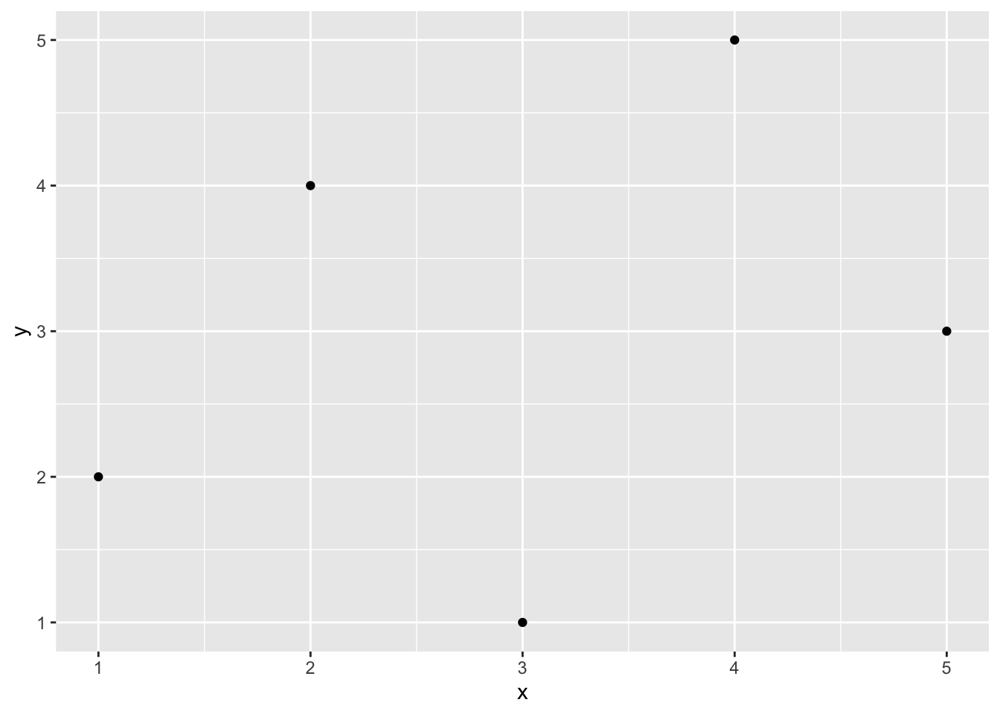
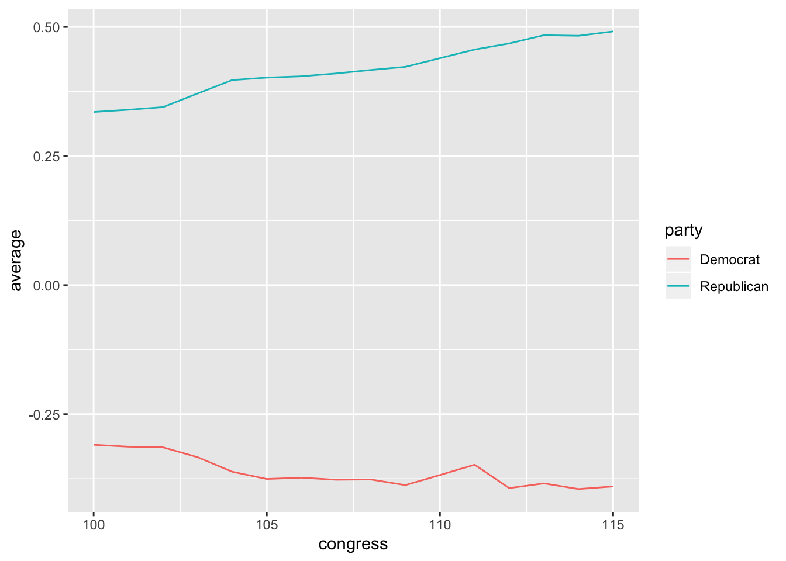

Chapter 2 Statistical Computing with R
R is a complex, powerful statistical programming language. It’s also free! I use R to do all my empirical and methodological work. I use R to wrangle data, fit statistical models, perform simulation studies, and draw graphics.
R works by scripts. The user writes a program called a “script”" and R executes the program. This might intimidate you a little. That’s okay. It’s easier than it sounds, and I’m here to help you.
We’ll learn a lot about R this semester, but we’ll learn only some aspects of R. I have to include some features of R and exclude others. Just because I show you one way to tackle a problem doesn’t mean it’s the only (or the best) way. But in order to get you working with data ASAP, we have to exclude some important concepts and tools in R.
Rather than use R directly, though, we’ll use RStudio to manage and run our R programs. RStudio is simply a way to organize our R code. I use RStudio for all my R programming. I even use RStudio to write documents and make presentations using RMarkdown.
2.1 R as a Calculator
To get started with R, just open up RStudio and look around. If you want, you can use R like a calculator–just type directly into the console as you would a calculator.

Fresh installation of RStudio
## [1] 4## [1] 6## [1] 8## [1] 0.6666667## [1] 20.08554## [1] 0.6931472## [1] 1.414214Review Exercises
Using R as a calculator, calculate the following (in the console):
- \(32 + 17\)
- \(32 \times 17\)
- \(\frac{32}{17}\)
- \(32^2\)
- \(\sqrt{32}\)
- \(\log{32}\)
2.2 Scripts
Ultimately, we’ll want to write all of our code in scripts so that we can modify, reproduce, and check our work. From now on, almost everything we do will go in a script. The idea is not to do an analysis, but to write a script that can do an analysis for us.

Scripts in RStudio
To open a new R script, click File, New File, R Script. You can type lines of code directly into this script. In the upper-right corner of the script window, you’ll see a Run button. This runs the entire line that the cursor is currently on or all the highlighted lines. This is equivalent to Command + Enter (or Control + Enter on Windows). Unless the script takes a long time to run (and I don’t think any of ours will), I recommend hitting Command + A (or Control + A on Windows) to highlight the entire script and then Command + Enter (Control + Enter on Windows) to run the entire script. You need to get into the habit of running the entire script, because you want to entire script to work in one piece when you are done. It is much easier to do this if you’re running the entire script all along.
ProTip: To run your code, press command + a (or control + a on Windows) and then press command + enter (or control + enter on Windows).
To save this script, simply click File > Save. I discuss where to save files a little later, but for now, just realize that R scripts will have a .R extension, such as my-script.R or important-analysis.R.
2.2.1 Importance
Doing your work in a script is important. You might have done a statistical analysis before or at least manipulated data with Excel. Most likely, you went though several steps and perhaps ended with a graph. That’s fantastic, but there are several problems.
- If you want to re-do your analysis, you must go through the whole process again.
- You might forget what you did. (I shouldn’t say “might”–you will forget.)
- You cannot easily show others what you did. Instead, they must take your word for it.
- You cannot make small changes to your analysis without going through the whole process again.
Scripting solves each of these problems.
- If you want to re-do your analysis, just open your script and click Run.
- If you forget what you did, just look at your script.
- If you want to show others exactly what you did, just show them your script.
- If you want to make a small change to your analysis, just make a small change to your script and click Run.
Scripting might seem like a lot more work. At first, it will be more work. By the end of the semester, it will be less work. As part of the papers you’ll write for this class, you’ll write a script.
2.3 Object-Oriented Programming
But R is much more powerful than a simple calculator, partly because it allows object-oriented programming. You can store things as “objects” to reference later. Just about anything can be stored as an object, including variables, data sets, functions, numbers, and many others.
2.3.1 Scalars
Let’s start with a single number, sometimes called a “scalar.” Let’s create an object b that holds or contains the number 2. To do this, we simply use the assignment operator <-, which we read as “gets.”
We can be very creative with naming objects. Rather than b, we could have used myobject, myObject, my.object, or my_object. From a style perspective, I prefer my_object or important_variable. In general, you want to give objects descriptive names so that you code is easy to read, but short names so that the code is compact and easy to read and write.
ProTip: Give objects short, descriptive names.
We can now repeat some of the calculations from above, using b instead of two. Given that you know b equals two, check that the following calculations make sense.
## [1] 5## [1] 6## [1] 8## [1] 9## [1] 0.6666667## [1] 7.389056## [1] 0.6931472## [1] 1.414214You probably realize that it would be easier to just use 2 rather than b. But we’ll be doing more complicated calculations. Rather than b holding scalars, it might hold thousands of survey responses. Rather than applying a simple function, we might apply many functions.
2.3.2 Functions
So what is a function? In the above examples exp(), log(), and sqrt() are functions. Importantly, functions are followed immediately by parentheses (i.e., (), not [] or {}, which have different meanings). Arguments are supplied in the functions that tell the function what to do.
You probably didn’t think about it at the time, but you can use many different bases when taking a logarithm. What base did we use when we ran log(b)? To see this, let’s open the help file.

help file for log()
The section “Usage” shows the typical function syntax. The log() function takes up to two arguments. The first argument x is a “numeric vector.” We’ll talk more specifically about numeric vectors below, but for now, we can consider a scalar as a numeric vector. If we provide the arguments in the same order that the appear in the functions in the “Usage” section, then we do not have to name the argument, but we still can. For example, log(b) and log(x = b) are equivalent.
ProTip: If you need to know how to use a particular function such as
exp(), then typehelp(exp)or?expinto the console.
You’ll also see from the help file that the default that default is base = exp(1), where exp(1) is just the number \(e\), the base of the natural log. This means that if you don’t specify base, it will use base = exp(1).
## [1] 0.6931472## [1] 0.6931472## [1] 0.30103## [1] 0.30103Notice that if we put the arguments in the proper order, we do not have to name the argument, so that log(b, base = 10) is equivalent to log(b, 10). However, the meaning of log(b, base = 10) is more clear, so I prefer that approach.
ProTip: If arguments are supplied to functions in the correct order, then names are unnecessary. However, names should be included whenever there might be doubt about the meaning of the argument. In practice, this most often means leaving the first argument unnamed and naming the rest.
Review Exercises
- Open a new script and give the object
xthe scalar 32. - Repeat the first set of review exercises using
xrather than the number 32. - Add comments explaining what the code is doing.
2.3.3 Vectors
But if we can only work with single numbers, we won’t get very far.
When we do statistical computing, we’ll usually want to work with collections of numbers (or collections of character strings, like "Republican" or "Male"). In an actual problem, the collection might contain thousands or millions of numbers. Maybe these are survey respondents’ ages or hourly stock prices over the last few years. Maybe they are a respondent’s sex (i.e., "Male" or "Female") or party identification (i.e., "Republican", "Democrat", "Independent", or "Other").
We’ll call this collection of numbers or character strings a “vector” and we’ll refer to the number of elements in the vectors as the “length” of the vector.
There are several types of vectors, classified by the sort of elements they contain.
numeric: contain numbers, such as 1.1, 2.4, and 3.4. Sometimes numeric variables are subdivided intointeger(whole numbers, e.g., 1, 2, 3, etc.) anddouble(fractions, e.g., 1.47, 3.35462, etc.).character: contain character strings, such as"Republican"or"Argentina (2001)".factor: contain character strings, such as"Very Liberal","Weak Republican", or"Female". Similar tocharacter, except the entire set of possible levels (and their ordering) is defined.logical: containTRUEand/orFALSE.
2.3.3.1 Numeric Vectors
Rather than the scalar 2, for example, we might want to work with the collection 2, 5, 9, 7, and 3. Let’s assign the collection above to the object a.
We can create a vector using the “collect” function c().
ProTip: To create a vector, one tool we can use is the “collect” function
c().
If we want to look at the object a, we need to enter a on a line by itself. This will print the object a for us to inspect. But since we only need to check this once, maybe we just type it in the console instead of including it in the script.
## [1] 2 5 9 7 3We can now apply functions to the vector a just like we did for the scalar b. In each case, the function is applied to each element of the vector.
## [1] 5 8 12 10 6## [1] 6 15 27 21 9## [1] 8 125 729 343 27## [1] 9 243 19683 2187 27## [1] 0.6666667 1.6666667 3.0000000 2.3333333 1.0000000## [1] 7.389056 148.413159 8103.083928 1096.633158 20.085537## [1] 0.6931472 1.6094379 2.1972246 1.9459101 1.0986123## [1] 0.3010300 0.6989700 0.9542425 0.8450980 0.4771213## [1] 1.414214 2.236068 3.000000 2.645751 1.732051## [1] 26## [1] 5.2So far, we’ve only used numeric vectors–vectors that contain numbers. But we can create and work with other types of vectors as well. For now, let’s just illustrate two types: vectors of character strings, factors (and ordered factors), and logical vectors.
Review Exercises
- In a script (perhaps the script you began in the exercises above), create a numeric vector assigning the collection 2, 6, 4, 3, 5, and 17 to the object
my_vector. - Create another numeric vector assigning the collection 64, 13, and 67 to the object
myOtherVector. - Use the
sum()function to add the elements ofmy_vectortogether. - Use the
sqrt()function to take the square root of the elements ofmyOtherVector. - Add 3 to the elements of
my_vector. - Add comments to the script explaining what this code is doing.
2.3.3.2 Character Vectors
Character strings are simply letters (or numbers, I suppose) surrounded by quotes, such as "Republican" or "Male". If we put c() (i.e., “combine”) together multiple character strings, then we have a character vector.
## [1] "Republican" "Democrat" "Republican" "Independent"## Error in x * 3: non-numeric argument to binary operatorA comment about escapes: Inside a string (i.e., text surrounded by quotes, e.g., "Male"), a backslash \ is considered an “escape.” For example \n represents new line and \t represents tab.
## Repub
## lican## Demo cratThis is important because filenames are sometimes represented with back-slashes, such as data\nominate.csv. If entered this way, R will not read the data properly, because it treats \n as an escape and tries to put a new line there.
The solution is to use two back-slashes to represent one (e.g., data\\nominate.csv). Or you can use a forward-slash / instead (e.g., data/nominate.csv). Note that Mac uses forward-slashes in file names by default, so it might not come up. For Windows users, though, you need to use either double back-slashes or switch to forward slashes.
Review Exercises
- Create a character vector containing the elements Male, Female, Male, Male, and Female. Assign this vector to the object
sex. - Create a character vector containing the elements Liberal, Moderate, Moderate, Conservative, and Liberal. Assign this vector to the object
ideology.
2.3.3.3 Factor Vectors
A factor vector is much like a character vector, but can only take on predefined values. While we might use a character vector to encode a variable that can have a variety of values (e.g., respondent’s name), we might use a factor to encode a variable that can take on just a few values, such as party identification (e.g., “Republican,” “Independent,” “Democrat,” “Other”). We refer to the possible values of a factor as the “levels.”
Creating a factor is more tricky than creating a numeric or character vector. We might take several approaches, but I suggest the following two-step approach:
- Create a character vector containing the information using
c(). - Add the levels using the
factorfunction.
Factor vectors have two particular advantages over character vectors.
- It allows us to easily see when one category has zero observations.
- It allows us to control the order in which the categories appear. This will be useful, even for categorical variables that have no natural ordering (e.g., race, eye color).
# create a character vector
pid <- c("Republican", "Republican", "Democrat", "Other")
# check type
class(pid)## [1] "character"## pid
## Democrat Other Republican
## 1 1 2We can fix these two problems by using a factor vector instead.
# create a factor vector in two steps
## step 1: create a character vector
pid <- c("Republican", "Republican", "Democrat", "Other")
## step 2: add levels using factor()
pid <- factor(pid, levels = c("Republican",
"Independent",
"Democrat",
"Other"))
# check type
class(pid)## [1] "factor"## pid
## Republican Independent Democrat Other
## 2 0 1 1You can see that by creating a factor variable that contains the level information, we can see that we have no Independents in our sample of four respondents. We can also control the ordering of the categories.
Review Exercises
- Change the character vector
sexcreated above to a factor vector. Be sure to explicitly add the levels. The order does not matter. Assign this new factor variable to the objectsex_factor. - Change the character vector
ideologycreated above to a factor vector. Be sure to explicitly add the levels. Use an intuitive ordering. Assign this new factor variable to the objectideology_factor.
2.3.3.4 Logical Vectors
Logical vectors contain elements that are true or false. R has a special way to represent true and false elements. R uses TRUE (without quotes) to represent true elements and FALSE (again, without quotes) to represent false elements. To create a logical vector, we can c() together a series of TRUE’s and/or FALSE’s.
## [1] TRUE TRUE FALSE TRUE FALSEReview Excercises
- Create the logical vector containing. True, False, False, True, and True. Assign it to the object
logic1. - Multiply
logic1times 3. What do you get? Does that make sense?
2.3.4 More Information
You should treat my notes as incomplete. I gloss over some potentially relevant distinction to get you up and going quickly. For a complete description of vectors, see chapter 4 of Advanced R Programming. You can find a similar description in chapter 20 of R4DS.
I don’t mention dates and times at all, but R makes it easy to work with vectors of dates and date-times. We’ll discuss those when we get talk about data wrangling, because it’s a more advanced topic. For reference, you can see the lubridate page on the tidyverse website.
2.4 Missing Values
Missing data are extremely common in statistics. For example, a survey respondent might refuse to reveal her age or income. Or we might not know the GDP or child mortality rate for a particular country in a particular year. In R, we can represent these values with NA (“not available”). Notice that NA does not have quotes.
Different functions handle NA’s differently. Some function will drop missing values (e.g., compute the statistic using the non-missing data) and other functions will fail. Most of the simple functions that we’ll use at first will fail by default (e.g., sum(), mean()), but many of the more advanced functions we’ll use later (e.g., lm()) will drop missing values by default.
x <- c(1, 4, 3, NA, 2)
log(x) # doesn't fail: computes the log for observed data, returns NA for missing data## [1] 0.0000000 1.3862944 1.0986123 NA 0.6931472## [1] NAsum(x, na.rm = TRUE) # doesn't fail: setting na.rm = TRUE tell the function to drop the missing data## [1] 10Review Exercises
- Create the object
xusingx <- c(1, 4, 3, NA, 2). Usingmean()to find the mean ofxwith and without using the argumentna.rm = TRUE. In a comment, explain why the results are different. Isna.rm = TRUEa reasonable choice? - Repeat using
sum()rather thanmean().
2.5 Logical Operators
Occasionally, we’d like R to test whether a certain condition holds. We’ll use this most often to choose a subset of a data set. For example, we might need only the data from the 100th Congress (from a data set that contains all Congresses) or only data before 1990 (for a data set that contains all years from 1945 to 2000).
The logical operators in R are <, <=, ==, >=, >, and !=. Notice that we must use ==, not =, to test for (exact) equality. We use != to test for inequality. We can use & to represent “and” conditions and | to represent “or.” Logical operators return either TRUE or FALSE.
| Operator | Syntax |
|---|---|
| “less than” | < |
| “less than or equal to” | <= |
| “exactly equal to” | == |
| “greater than or equal to” | >= |
| “greater than” | > |
| “not equal to” | != |
| “or” | | |
| “and” | & |
Try running some of the following. Make sure you can anticipate the result.
# less than
2 < 1
2 < 2
2 < 3
# less than or equal to
2 <= 1
2 <= 2
2 <= 3
# equal to
2 == 1
2 == 2
2 == 3
# greater than or equal to
2 >= 1
2 >= 2
2 >= 3
# greater than
2 > 1
2 > 2
2 > 3
# not equal to
2 != 1
2 != 2
2 != 3
# or
(1 > 2) | (3 > 4)
(1 < 2) | (2 > 4)
(1 < 2) | (3 < 4)
# and
(1 > 2) & (3 > 4)
(1 < 2) & (2 > 4)
(1 < 2) & (3 < 4)Review Exercises
Use logical operators to test the whether each element of my_vector (created above) is…
- greater than 3.
- less than 3.
- equal to 3
- greater than 3 or less than 3.
- less than or equal to 3
- greater than or equal to 3
- greater than 2 or less than 1
- greater than 2 and less than 1
- greater than 1 and less than 2
2.6 Packages
Because R is an open-source program, it is easy to write extensions, and thousands of people have. These extensions come in the form of “packages” and these packages contain mostly functions that do stuff with data. For example, I’ve written an R package that does plotting. (I’ve since deferred to ggplot2). I’ve written another package that estimates statistical model. Hadley Wickam has written many R packages, some of which we’ll use. He’s written haven, which we can use to read proprietary data formats, such as Stata (.dta) files. He’s also written readr, which we can use to quickly read in better formats, such as comma-separated values (.csv), which I’ll encourage you to use throughout the course. He’s also written a package that is helpful for creating plots called ggplot2. We see that later.
In order to use a package, it must be installed once and then loaded in each session (i.e., after each restart). Some packages come pre-installed in R (e.g., stats, MASS). Some of these pre-installed packages are automatically loaded in each session (e.g., stats), while others must be loaded manually in each session (e.g., MASS) if you want to use them. Other packages that do not come pre-installed with R need to be installed manually (but just once) and loaded in each session.
2.6.1 Installing Packages
If you click the “Packages” tab in RStudio (positioned in the upper-right panel by default), it will show you a list packages that are currently installed. I’ve attached a screenshot of my installed packages below, but your’s might look slightly different–I’ve probably installed a lot more than you.

List of packages in RStudio
If you want to use a function from a package and it is not installed, you must first install it. Most R packages are available on CRAN, and can be installed with the install.packages() function.
install.packages("ggrepel")
install.packages("ggthemes")If you want to go ahead and install these packages, feel free–we’ll use them later. RStudio might ask you to choose a mirror. If so, just choose something close to you–it doesn’t really matter.
If you look at your list of installed packages again, you should see ggrepel and ggthemes.
You only need to install a package once. Once you’ve installed it, you have it on your hard drive.
2.6.2 Loading Packages
In order to use function from a package, though, the package must be installed and loaded. In the packages list, the check box (beside the package name) indicates whether the package is loaded. In the screenshot above, you can see that I only had one package loaded at the time I took the screenshot–blme, a package useful for estimating Bayesian linear mixed-effects models.
Let’s see how to access functions that are in packages. First, let’s create some data to plot.
Now let’s try to use the qplot() function in the ggplot2 package to create a scatterplot of x and y. I’m assuming that you’ve already installed the ggplot2 package (it’s included in the tidyverse package).
Now, let’s try to use qplot().
## Error in qplot(x, y): could not find function "qplot"You’ll notice that the qplot() function cannot be found. That’s because while ggplot2 is installed (i.e., present in the library), it is not loaded (i.e., off the shelf). If you want to use a function from the ggplot2 package, you need to load the package using the library() function. You need to load the package each time you start a new session (e.g., restart RStudio), so be sure to include this in your script. Notice that you do not need to use quotes around the name of the package when using the library() function.
## Warning: package 'ggplot2' was built under R version 3.6.2
When we use library(), it loads the entire set of functions in the package into our workspace, making them all accessible to us. There are literally hundreds of functions in the ggplot2 package. If we prefer to avoid loading all the functions, we can use the syntax package::function() to tell R where to find the function in the library without loading all the functions into the workspace.

ggplot2::qplot(x, y) will work whether or not ggplot2 is loaded.
I don’t have strong feelings about which approach is better–it depends on the context. If you only need to use one function from package one time, then perhaps it makes more sense to use the package::function() approach. If you’ll be using many functions many times, then it makes sense to use library(). Use whichever makes most sense to you. However, I’ll tend to use package::function() a lot, because it makes it clear where the function is coming from.
Review Exercises
- Install and load the GGally package. Write a simple example of a function in the package. Use example code from the vignette.
- Install and load the ggdag package. Write a simple example of a function in the package. Use example code from the vignette.
- Install and load the texreg package. Write a simple example of a function in the package. Perhaps try the code below. If you are feeling ambitious, you might try compiling a LaTeX document with the LaTeX code output by
texreg(). If you do this, be sure to start with the LaTeX template from 50-legs or the very minimal template from Homework 1.
library(texreg)
fit1 <- lm(Fertility ~ . , data = swiss)
fit2 <- update(fit1, . ~ . -Examination)
screenreg(list(fit1, fit2))
texreg(list(fit1, fit2))
2.2.2 Comments
You can also insert comments into R scripts. This is very important, especially when you are first learning to program. To insert a comment, simply type a pound or hash sign
#(i.e., “hashtag” to me) anywhere in the code. Anything on the line after the hash will be ignored. I’ll always carefully comment my R code, and I’ll be even more careful about it for this class. Here’s an example of some commented code for the previous example.Comments in R